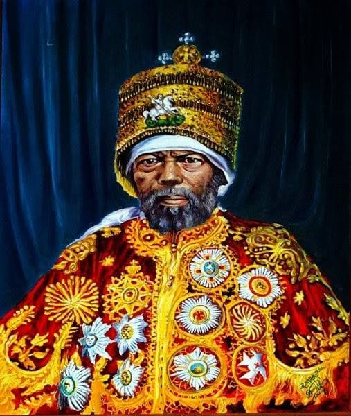
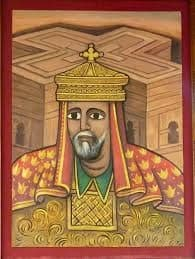

| ወደ ገፁ መጨረሻ | |
የነገሥታት ታሪክሀገራችንን መርተው ከነበሩ ታላላቅ ንጉሶች እና ንግስቶች ውስጥ የተወሰኑትን እናስተዋውቃችሁ። ዳግማዊ ምኒልክ ዳግማዊ ምኒልክ ከ1882-1906 ሀገራችንን መርተዋል።አፄ ምኒሊክ በዘመነ ንግሣቸው በ የካቲት 23፣ 1988ዓ.ም ሀገራችን ኢትዮጵያ ከጣሊያን ጋር አድዋ በተባለ ቦታ ጦርነት ብትገጥምም፣ በሀገራችን አሸናፊነት ተጠናቋል። የአድዋ ድል ለኢትዮጵያ ብቻ ሳይሆን ለመላው የአፍሪካ ህዝቦች እና ለጥቁር ህዝቦች በሙሉ የነጻነትና የድል ምልክት ነው።በሀገራችን በየአመቱ የካቲት 23 ቀን የአድዋ ድል መታሰቢያ በዓል ይከበራል። ንግሥት ሳባ ንግሰተ ሳባ የነገሰችው በአክሱም አቅራቢያ በጥንቱ አጠራር ሳባ በምትባለው ከተማ ነበር።ገናና ንግስትና በጥበብ የተሞላች እንደነበረችም ይታወቃል።ኢትዮጵያን መግዛትና ማስተዳደር
የጀመረችው ከክርስቶስ ልደት በፊት ከ1013 ጀምሮ ነው።ንግስት ሳባ የንጉስ ሰሎሞንን ጥበብ፣የቤተ-መንግስቱንና የስርአቱን ህግና አደረጃጀት ለማየት የተለያዩ ስጦታዎችን በመያዝ ወደ እየሩሳሌም ተጉዛ ተመልሳለች።
ንጉሥ ላሊበላ ዓፄ ገብረመስቀል ላሊበላ ከ1181 እስከ 1221ዓ.ም. የኢትዮጵያ ንጉሠ ነገሥት የነበሩ ሲሆን በዓለም ደረጃ ታዋቂ የሆኑቱን የአለት ውቅር የሆኑትን
የላሊበላ አብያተ ቤተ ክርስቲያን ሕንጻወች በማስገንባት ይታወቃሉ

|